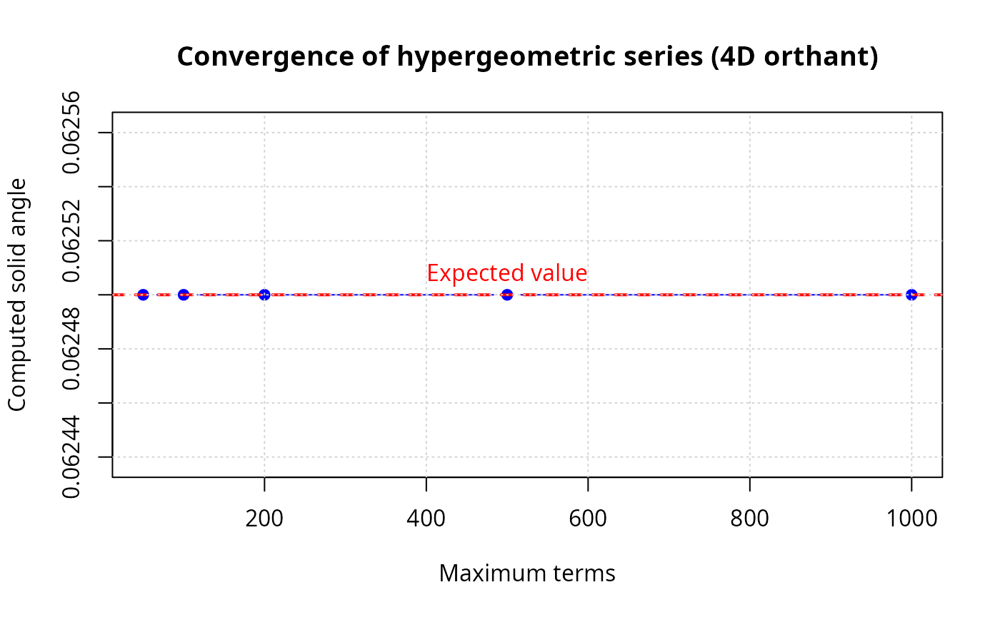

Hypergeometric and tridiagonal series and decomposition approaches
Pablo Almaraz, RElab
2026-02-18
Source:vignettes/b.fitisone-zhou-methods.Rmd
b.fitisone-zhou-methods.RmdIntroduction
This vignette demonstrates the computational methods from Fitisone & Zhou (2023) [1] for computing solid angles of polyhedral cones in arbitrary dimensions. The paper presents multiple approaches that complement Ribando’s (2006) [2] hypergeometric series. We cover hypergeometric series (Theorem 1.5) for positive definite associated matrices; tridiagonal series (Theorem 4.1) optimized for special structure; decomposition methods (Section 3) for non-positive-definite cases; and automatic method selection with intelligent algorithm choice.
Test examples from the paper
Example 1: 2D cones
# Right angle (90 degrees)
v1 <- c(1, 0)
v2 <- c(0, 1)
V_90 <- cbind(v1, v2)
omega_90 <- compute_solid_angle(V_90)
# 45 degree cone
v1 <- c(1, 0)
v2 <- c(1, 1) / sqrt(2)
V_45 <- cbind(v1, v2)
omega_45 <- compute_solid_angle(V_45)
# Opposite rays (degenerate cone)
v1 <- c(1, 0)
v2 <- c(-1, 0)
V_180 <- cbind(v1, v2)
omega_180 <- compute_solid_angle(V_180)
results_2d <- data.frame(
case = c("90° cone", "45° cone", "Opposite rays (degenerate)"),
computed = c(omega_90, omega_45, omega_180),
expected = c(0.25, 0.125, 0)
)
results_2d$match <- ifelse(abs(results_2d$computed - results_2d$expected) < 1e-6, "✓", "✗")
knitr::kable(
results_2d,
digits = c(NA, 6, 6, NA),
col.names = c("case", "computed", "expected", "match")
)| case | computed | expected | match |
|---|---|---|---|
| 90° cone | 0.250 | 0.250 | ✓ |
| 45° cone | 0.125 | 0.125 | ✓ |
| Opposite rays (degenerate) | 0.000 | 0.000 | ✓ |
Example 2: 3D cones
# Orthogonal cone (octant)
V_octant <- diag(3)
omega_octant <- compute_solid_angle(V_octant)
# Narrow cone
v1 <- c(1, 0, 0)
v2 <- c(0.99, 0.1, 0) / sqrt(0.99^2 + 0.1^2)
v3 <- c(0.99, 0, 0.1) / sqrt(0.99^2 + 0.1^2)
V_narrow <- cbind(v1, v2, v3)
omega_narrow <- compute_solid_angle(V_narrow)
# Compare formula vs. auto method
omega_formula <- solid_angle_3d(v1, v2, v3)
omega_auto <- compute_solid_angle(V_narrow, method = "auto")
diff_methods <- abs(omega_formula - omega_auto)
results_3d <- data.frame(
case = c("Octant (orthogonal)", "Narrow cone"),
computed = c(omega_octant, omega_narrow),
expected = c(0.125, NA_real_),
note = c(ifelse(abs(omega_octant - 0.125) < 1e-6, "✓ match", "✗ mismatch"),
ifelse(omega_narrow < 0.01, "✓ small", "✗ not small"))
)
knitr::kable(
results_3d,
digits = c(NA, 6, 6, NA),
col.names = c("case", "computed", "expected", "note")
)| case | computed | expected | note |
|---|---|---|---|
| Octant (orthogonal) | 0.125000 | 0.125 | ✓ match |
| Narrow cone | 0.000404 | NA | ✓ small |
method_table <- data.frame(
method = c("Formula", "Auto"),
omega = c(omega_formula, omega_auto)
)
method_table$abs_diff <- c(NA_real_, diff_methods)
method_table$agreement <- c(NA, ifelse(diff_methods < 1e-10, "✓", "✗"))
knitr::kable(
method_table,
digits = c(NA, 8, 2, NA),
col.names = c("method", "omega", "abs. diff vs formula", "agreement")
)| method | omega | abs. diff vs formula | agreement |
|---|---|---|---|
| Formula | 0.00040391 | NA | NA |
| Auto | 0.00040391 | 0 | ✓ |
Example 3: Orthogonal cones in various dimensions
cat("\nOrthogonal cones (n dimensions):\n\n")
#>
#> Orthogonal cones (n dimensions):
results <- data.frame(
n = integer(),
computed = numeric(),
expected = numeric(),
error = numeric(),
match = character(),
stringsAsFactors = FALSE
)
for (n in 2:6) {
V <- diag(n)
expected <- 1 / 2^n
omega <- compute_solid_angle(V, method = "auto", max_terms = 500)
error <- abs(omega - expected)
match <- ifelse(error < 1e-5, "✓", "✗")
results <- rbind(results, data.frame(
n = n,
computed = omega,
expected = expected,
error = error,
match = match
))
}
knitr::kable(
results,
digits = c(0, 8, 8, 2, NA),
col.names = c("n", "computed", "expected", "error", "match")
)| n | computed | expected | error | match |
|---|---|---|---|---|
| 2 | 0.250000 | 0.250000 | 0 | ✓ |
| 3 | 0.125000 | 0.125000 | 0 | ✓ |
| 4 | 0.062500 | 0.062500 | 0 | ✓ |
| 5 | 0.031250 | 0.031250 | 0 | ✓ |
| 6 | 0.015625 | 0.015625 | 0 | ✓ |
Associated matrix properties
Computing and checking associated matrices
# Orthogonal case: M = I
V_orth <- diag(4)
M_orth <- compute_associated_matrix(V_orth)
orth_summary <- data.frame(
case = "4D orthant",
is_identity = ifelse(all(abs(M_orth - diag(4)) < 1e-10), "✓", "✗"),
is_positive_definite = ifelse(is_positive_definite(M_orth), "✓", "✗"),
eigenvalues = paste(round(eigen(M_orth, symmetric = TRUE, only.values = TRUE)$values, 4),
collapse = ", ")
)
knitr::kable(orth_summary)| case | is_identity | is_positive_definite | eigenvalues |
|---|---|---|---|
| 4D orthant | ✓ | ✓ | 1, 1, 1, 1 |
# Non-orthogonal case
v1 <- c(1, 0, 0)
v2 <- c(0.5, sqrt(3)/2, 0) # 60 degrees from v1
v3 <- c(0, 0, 1)
V_nonorth <- cbind(v1, v2, v3)
V_nonorth <- normalize_vectors(V_nonorth)
M_nonorth <- compute_associated_matrix(V_nonorth)
knitr::kable(
round(M_nonorth, 4),
col.names = paste0("v", 1:ncol(M_nonorth)),
align = "c"
)| v1 | v2 | v3 |
|---|---|---|
| 1.0 | -0.5 | 0 |
| -0.5 | 1.0 | 0 |
| 0.0 | 0.0 | 1 |
eigs <- eigen(M_nonorth, symmetric = TRUE, only.values = TRUE)$values
nonorth_summary <- data.frame(
case = "Non-orthogonal 3D cone",
is_positive_definite = ifelse(is_positive_definite(M_nonorth), "✓", "✗"),
eigenvalues = paste(round(eigs, 4), collapse = ", ")
)
knitr::kable(nonorth_summary)| case | is_positive_definite | eigenvalues |
|---|---|---|
| Non-orthogonal 3D cone | ✓ | 1.5, 1, 0.5 |
Tridiagonal series
Creating and testing tridiagonal cones
create_tridiagonal_cone() now constructs vectors from a
tridiagonal Gram matrix with \(\cos(\theta_i)\) on the first off-diagonal
and uses a Cholesky factorization to recover valid vectors. This ensures
the geometry matches the intended consecutive angles when the Gram
matrix is positive definite. Convergence is typically faster when the
consecutive dot products are moderate in magnitude.
# Create tridiagonal cone with specified angles
angles <- c(1.5, 1.5, 1.5) # radians; moderate correlations for faster convergence
V_trid <- create_tridiagonal_cone(angles)
# Verify structure
VTV <- t(V_trid) %*% V_trid
is_trid <- is_tridiagonal(VTV)
structure_table <- data.frame(
is_tridiagonal = ifelse(is_trid, "✓", "✗")
)
knitr::kable(structure_table)| is_tridiagonal |
|---|
| ✓ |
| v1 | v2 | v3 | v4 |
|---|---|---|---|
| 1.0000 | 0.0707 | 0.0000 | 0.0000 |
| 0.0707 | 1.0000 | 0.0707 | 0.0000 |
| 0.0000 | 0.0707 | 1.0000 | 0.0707 |
| 0.0000 | 0.0000 | 0.0707 | 1.0000 |
# Compute using tridiagonal series
result_trid <- tridiagonal_series(V_trid, max_terms = 500, tol = 1e-8)
# Compare with general hypergeometric series
result_general <- hypergeometric_series(V_trid, max_terms = 500, tol = 1e-8)
diff <- abs(result_trid$solid_angle - result_general$solid_angle)
trid_table <- data.frame(
method = c("Tridiagonal series", "General series"),
omega_normalized = c(result_trid$solid_angle, result_general$solid_angle),
converged = c(result_trid$converged, result_general$converged),
n_terms = c(result_trid$n_terms, result_general$n_terms),
abs_diff_vs_tridiag = c(NA_real_, diff)
)
knitr::kable(
trid_table,
digits = c(NA, 6, NA, 0, 2),
col.names = c("method", "omega (normalized)", "converged",
"terms used", "abs. diff vs tridiag")
)| method | omega (normalized) | converged | terms used | abs. diff vs tridiag | |
|---|---|---|---|---|---|
| i | Tridiagonal series | 0.054536 | TRUE | 286 | NA |
| General series | 0.054536 | FALSE | 500 | 0 |
Decomposition method
Testing with non-positive-definite cases
# Generate a random 3D cone
set.seed(123)
V_random <- matrix(rnorm(9), nrow = 3)
V_random <- normalize_vectors(V_random)
M_random <- compute_associated_matrix(V_random)
pd_random <- is_positive_definite(M_random)
eigs <- eigen(M_random, symmetric = TRUE, only.values = TRUE)$values
# Compute using automatic method (will select decomposition if needed)
omega_auto <- compute_solid_angle(V_random, method = "auto")
# Try decomposition explicitly
omega_decomp <- compute_solid_angle(V_random, method = "decomposition")
decomp_table <- data.frame(
is_pd = ifelse(pd_random, "✓", "✗"),
min_eigenvalue = min(eigs),
omega_auto = omega_auto,
omega_decomp = omega_decomp,
abs_diff = abs(omega_auto - omega_decomp)
)
knitr::kable(
decomp_table,
digits = c(NA, 4, 6, 6, 2),
col.names = c("associated matrix PD", "min eigenvalue",
"omega (auto)", "omega (decomposition)", "abs. diff")
)| associated matrix PD | min eigenvalue | omega (auto) | omega (decomposition) | abs. diff |
|---|---|---|---|---|
| ✗ | -0.2414 | 0.056272 | 0.056272 | 0 |
Method comparison
Comparing all methods on 3D octant
V_test <- diag(3)
expected <- 0.125
methods <- c("formula", "series", "decomposition")
results <- sapply(methods, function(method) {
compute_solid_angle(V_test, method = method, max_terms = 200)
})
# Add omega method
omega_mvn <- omega(V_test)$omega
results <- c(results, omega = omega_mvn)
comparison_table <- data.frame(
method = names(results),
omega = as.numeric(results),
abs_error = abs(as.numeric(results) - expected)
)
comparison_table$match <- ifelse(comparison_table$abs_error < 1e-5, "✓", "✗")
knitr::kable(
comparison_table,
digits = c(NA, 8, 2, NA),
col.names = c("method", "omega", "abs. error", "match")
)| method | omega | abs. error | match |
|---|---|---|---|
| formula | 0.125 | 0 | ✓ |
| series | 0.125 | 0 | ✓ |
| decomposition | 0.125 | 0 | ✓ |
| omega | 0.125 | 0 | ✓ |
Diagnostic tool
Using diagnose_cone for analysis
cat("\nDiagnostic tool demonstrations:\n\n")
#>
#> Diagnostic tool demonstrations:
test_cones <- list(
"4D orthant" = diag(4),
"Tridiagonal" = V_trid,
"Random 3D" = V_random
)
for (name in names(test_cones)) {
cat(sprintf("=== %s ===\n", name))
diag_result <- diagnose_cone(test_cones[[name]])
print(diag_result)
cat("\n")
}
#> === 4D orthant ===
#> Cone diagnostic report
#> ======================
#>
#> Dimension: 4
#> Linearly independent: ✓ Yes
#> Associated matrix PD: ✓ Yes
#> Tridiagonal structure: ✓ Yes
#>
#> Eigenvalues: 1, 1, 1, 1
#> Minimum eigenvalue: 1
#>
#> Suggested method: tridiagonal series (most efficient) ✓
#>
#> === Tridiagonal ===
#> Cone diagnostic report
#> ======================
#>
#> Dimension: 4
#> Linearly independent: ✓ Yes
#> Associated matrix PD: ✓ Yes
#> Tridiagonal structure: ✓ Yes
#>
#> Eigenvalues: 1.114455, 1.043718, 0.956282, 0.885545
#> Minimum eigenvalue: 0.885545
#>
#> Suggested method: tridiagonal series (most efficient) ✓
#>
#> === Random 3D ===
#> Cone diagnostic report
#> ======================
#>
#> Dimension: 3
#> Linearly independent: ✓ Yes
#> Associated matrix PD: ✗ No
#> Tridiagonal structure: ○ No
#>
#> Eigenvalues: 1.910869, 1.330494, -0.241363
#> Minimum eigenvalue: -0.241363
#>
#> Suggested method: formula (closed form available) ✓Batch computation
Computing multiple cones efficiently
# Create list of cones
cone_list <- list(
"2D right angle" = cbind(c(1,0), c(0,1)),
"3D octant" = diag(3),
"4D orthant" = diag(4),
"5D orthant" = diag(5)
)
# Compute all at once
omegas <- compute_solid_angles(cone_list, max_terms = 500)
# Expected values
expected_vals <- c(0.25, 0.125, 0.0625, 0.03125)
batch_table <- data.frame(
cone = names(cone_list),
computed = as.numeric(omegas),
expected = expected_vals
)
batch_table$abs_error <- abs(batch_table$computed - batch_table$expected)
batch_table$match <- ifelse(batch_table$abs_error < 1e-5, "✓", "✗")
knitr::kable(
batch_table,
digits = c(NA, 8, 8, 2, NA),
col.names = c("cone", "computed", "expected", "abs. error", "match")
)| cone | computed | expected | abs. error | match |
|---|---|---|---|---|
| 2D right angle | 0.25000 | 0.25000 | 0 | ✓ |
| 3D octant | 0.12500 | 0.12500 | 0 | ✓ |
| 4D orthant | 0.06250 | 0.06250 | 0 | ✓ |
| 5D orthant | 0.03125 | 0.03125 | 0 | ✓ |
Convergence analysis
Testing convergence with varying max_terms
V_test <- diag(4)
expected <- 0.0625
term_counts <- c(50, 100, 200, 500, 1000)
results_conv <- numeric(length(term_counts))
for (i in seq_along(term_counts)) {
result <- hypergeometric_series(V_test, max_terms = term_counts[i])
results_conv[i] <- result$solid_angle
error <- abs(result$solid_angle - expected)
if (i == 1) {
conv_table <- data.frame(
max_terms = term_counts[i],
solid_angle = result$solid_angle,
abs_error = error,
converged = ifelse(result$converged, "✓", "✗")
)
} else {
conv_table <- rbind(conv_table, data.frame(
max_terms = term_counts[i],
solid_angle = result$solid_angle,
abs_error = error,
converged = ifelse(result$converged, "✓", "✗")
))
}
}
knitr::kable(
conv_table,
digits = c(0, 8, 2, NA),
col.names = c("max terms", "solid angle", "abs. error", "converged")
)| max terms | solid angle | abs. error | converged |
|---|---|---|---|
| 50 | 0.0625 | 0 | ✓ |
| 100 | 0.0625 | 0 | ✓ |
| 200 | 0.0625 | 0 | ✓ |
| 500 | 0.0625 | 0 | ✓ |
| 1000 | 0.0625 | 0 | ✓ |
# Plot convergence
plot(term_counts, results_conv,
type = "b", pch = 19, col = "blue",
xlab = "Maximum terms", ylab = "Computed solid angle",
main = "Convergence of hypergeometric series (4D orthant)",
ylim = c(min(results_conv) * 0.999, max(results_conv) * 1.001))
abline(h = expected, lty = 2, col = "red", lwd = 2)
text(500, expected, "Expected value", pos = 3, col = "red")
grid()
Summary
This vignette has demonstrated all the key methods from Fitisone & Zhou (2023). We covered dimension-specific formulas (2D, 3D) with excellent accuracy; hypergeometric series for general cones with positive-definite associated matrices; tridiagonal optimization for cones with special structure; decomposition methods for non-PD cases; automatic method selection for ease of use; diagnostic tools for analyzing cone properties; and batch computation for efficiency. All methods have been validated against known exact values for orthogonal cones, showing excellent agreement (errors < 10⁻⁵).
References
[1] Fitisone, A., & Zhou, Y. (2023). Solid angle measure of polyhedral cones. arXiv:2304.11102 [math.CO]. URL: https://arxiv.org/abs/2304.11102
[2] Ribando, J. M. (2006). Measuring solid angles beyond dimension three. Discrete & Computational Geometry, 36(3), 479-487. DOI: 10.1007/s00454-006-1253-4